The same moment, two task profiles
One question, one Jev answer shape, two policies.
Question—
Jevprobabilities
Policy—
Action—
Illustrative probabilities in the shape Jev returns; not measurements.
Why it is built this way
Turn-taking as decisions you can read, change and replay.
- 1No turn model to train. A new behaviour is a new question; a better Jev improves every decision at once.
- 2Latency you can swap. Decisions take tens of milliseconds; the rest is the language model's first line.
- 3Policies per business. Sample for liveliness, thresholds for predictability, on the same questions.
- 4Behaviour per task. Jev reads the profile's manner: a chatty companion and a careful support agent judge the same moment differently.
- 5Iterable. Every decision is logged with the state Jev read; reword a question and replay real calls before shipping.